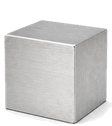
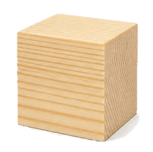
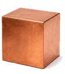
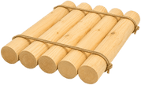
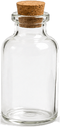

أنهينا مرحلة التعلّم، سننتقل إلى التمرين الأول ونجيب عن
4 أسئلة
يجب الإجابة بشكل صحيح عن 3 أسئلة على الأقل.
مرحبًا بكم وبكن
في مختبر الكثافة
لنضع أنفسنا في موضع العلماء ونحسب بأنفسنا كثافة مواد مختلفة.
سيكون كثيفًا ورائعًا
مختبر الكثافة
أ. وصلت إلى المختبر ثلاث مواد غير معروفة.
ساعدوا العلماء على تحديد ماهية كل مادة من خلال الحساب قيمة الكثافة خاصته.
1. اسحبوا كل مادة إلى الميزان، قيسوا الكتلة، ودوّنوها في الجدول.
2. اسحبوا كل مادة إلى المخبار المدرج، احسبوا الحجم خاصته، ودوّنوا ذلك في الجدول.
3. بالاستعانة بآلة حاسبة، احسبوا الكثافة لكل مادة ودوّنوها في الجدول.
| مادة | كتلة (جرام) |
حجم (سم³) |
الكثافة (جرام/سم³) |
|---|---|---|---|
| أ | |||
| ب | |||
| ت |
ب. أمامكم رسم بياني للحجم / الكتلة لـ3 مواد.
اسحبوا كل مادة إلى الخط المناسب لها في الرسم البياني.

الألومنيومالكثافة: 2.7
خشب الصنوبرالكثافة: 0.5
نحاسالكثافة: 8.96انظروا إلى الرسم البياني واحسبوا ما ستكون كتلة جسم من الألومنيوم حجمه 6 سم³؟
اسحبوا الرقم إلى المكان المناسب في الرسم البياني.
للرسم البياني للكتلة-الحجم الخاص بخشب البلوط والزجاج والرصاص، أُضيف أيضًا خط الماء.
بعد النظر إلى الرسم البياني، حددوا بالنسبة لكل عبارة: صحيحة أو غير صحيحة.
خشب البلوط يطفو في الماء
الزجاج سيطفو في الماء
سيغوص الرصاص في الماء
مادة خطها شديد الانحدار أكثر
من خط الماء سيغوص في الماء.
من نفس المواد (خشب البلّوط، الزجاج، الرصاص) تم صنع أجسام جديدة.
اسحبوا كل جسم إلى المكان المناسب (سيطفو أو سيغوص في الماء):

